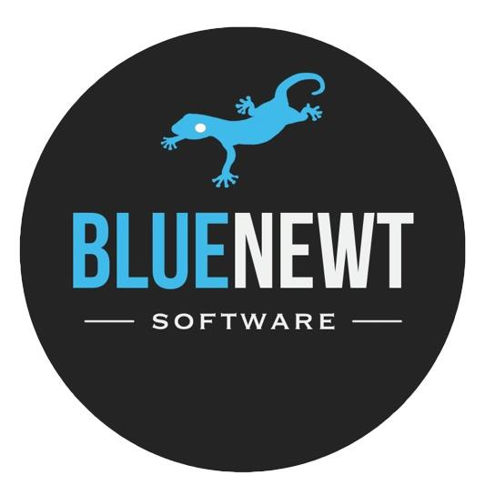

Resume. (still working on the styling of this page)
Education
University of Michigan, Ann Arbor

Graduation: May 2019
- School of Information, Bachelor of Science in Information
- Concentration in Information Analysis
- Relevant coursework: Data-Oriented Programming, Data Manipulation, Data
Exploration, Building Interactive Applications, Web Design & Accessibility
Experience
Blue Newt Software, Ann Arbor, MI

May 2018 - present
- Worked on a project involving animal/barn tracking for farmers, collecting data from animal tracking devices and writing reports with my analysis
- Program Python scripts used by employees to process and organize tag data in a structured, easy-to-understand format
- Utilize advanced Python machine learning libraries like scikit-learn and Tensorflow to build models and make predictions with motion-tracking data
- Work on a team designing and engineering web app user interfaces for desktop and mobile using React